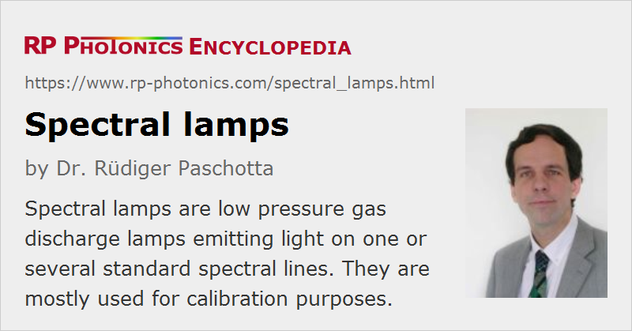

Spectral Lamps
Definition: low pressure gas discharge lamps emitting light on one or more standard spectral lines
Alternative term: calibration lamps
More general term: gas discharge lamps
German: Spektrallampen
Category: non-laser light sources
How to cite the article; suggest additional literature
Author: Dr. Rüdiger Paschotta
There are gas discharge lamps which emit light on certain standard spectral lines as required mostly for spectral calibration purposes. Such lamps are called spectral lamps or based on their application as calibration lamps. The generated optical lines can be in the visible, infrared or ultraviolet spectral region.
Typical emitting species are noble gases like helium (He), neon (Ne), argon (Ar), krypton (Kr) and xenon (Xe) as well as metal vapors like sodium (Na), cesium (Cs), mercury (Hg) and cadmium (Cd). The light emission is nearly always from single atoms or ions, not from molecules. In some cases, such species are mixed either in order to obtain more spectral lines or to improve performance via energy transfer processes. The radiation of each line can be considered as quasi-monochromatic, usually with a wavelength which is defined with a precision a tiny fraction of 1 nm. That results in some degree of temporal coherence (but with a coherence length often well below 1 cm), while the spatial coherence is generally quite low.
For some applications, one isolates a specific line with an optical bandpass filter, usually with a monochromator or some type of interference filter.
The table below shows a list of wavelengths of standard spectral lines and indicates what kind of spectral lamps are used to generate them. These are only some particularly common lines; lamps are available for many others.
| Wavelength | Color | Designation | Element |
|---|---|---|---|
| 365.0146 nm | ultraviolet | i | mercury |
| 404.6561 nm | violet | h | mercury |
| 435.8343 nm | blue | g | mercury |
| 479.9914 nm | blue | F' | cadmium |
| 486.1327 nm | blue | F | hydrogen |
| 543.5 nm | green | green HeNe | helium–neon laser |
| 546.074 nm | green | e | mercury |
| 587.5618 nm | yellow | d | helium |
| 589.2938 nm | orange | D | sodium |
| 632.8 nm | red | red HeNe | helium–neon laser |
| 643.8469 nm | red | C' | cadmium |
| 656.2725 nm | red | C | hydrogen |
| 706.5188 nm | red | r | helium |
| 852.11 nm | infrared | s | cesium |
| 1013.98 nm | infrared | t | mercury |
Table 1: Table of spectral lines which are frequently used in optics and can all be generated with spectral lamps.
Operation Principle
Spectral lamps are basically always gas discharge lamps with a low gas pressure, so that pressure broadening (spectral broadening based on frequent collisions during the emission of atoms or ions) is largely avoided. With that, one typically obtains light emission on several spectral lines.
In principle, one can call such lamps arc lamps in the sense that they are used for continuous-wave operation. However, they do not work with an arc discharge, but rather with a low temperature glow discharge. Operation currents are usually in the lower milliampere region, while high-power arc lamps are often operated with several amperes.
The emitting volume in the lamp is often kept relatively small, because for many applications one can anyway only utilize light coming from a relatively small region. That implies that the electrodes are relatively close together, and that the operation voltage is lower than for long-arc lamps.
Frequently, the actual lamp envelope is integrated into another glass envelope, often of approximately cylindrical shape. That can help by giving additional protection of the user against electric shocks, also protection for the lamp against short-circuits and touching. It may also be helpful to reach a somewhat higher lamp temperature that way.
Wavelength standards with far higher optical power and very much lower optical linewidth can be made based on wavelength-stabilized lasers. Due to the high spatial coherence, their radiance and of course also the spectral radiance are also higher by many orders of magnitudes. Optical frequency standards based on such technology with a high degree of sophistication are used for optical clocks, for example.
Electrical Aspects
The low emitting volume and low power density imply a low output power and also a low electrical input power. Nevertheless, the operation voltages can be some hundreds of volts, and significantly more for ignition. That can lead to safety hazards e.g. if lamp fixtures are not properly isolated.
Lamp suppliers usually also offer suitable sockets and lamp power supplies. A few lamps are even available with a standard socket like E27 for direct operation with line voltage through an internal power supply circuit.
Lamp Housing
Frequently, calibration lamps are integrated into a housing which provides various kinds of additional functionality – for example, easy mounting, protection against electric shocks, suppressing light output in unwanted directions and protecting the lamp. The housing may also contain an optical filter for blocking unwanted parts of the optical spectrum. For example, one may want to block the ultraviolet light in order to avoid using protective eyewear, clothing and gloves.
Usually, one obtains diffuse light emission in some substantial angular range, but there are also lamps with a fiber-optic output. The simplest solution is to place the end of a single-mode fiber or multimode fiber close to the lamp envelope. Improved light coupling may be achieved with a lens. However, the coupling efficiency is always quite low due to the low spatial coherence of the light source.
Performance Parameters
First of all, a spectral lamp must provide the required spectral line(s), which is simply achieved by using the according emitting species. The wavelength accuracy is often not specified, but usually quite high. Also, the emission linewidth is typically rather small, but often not specified.
Due to the moderate power density of spectral lamps, the immediate optical power or radiant flux is not very high, and particularly the radiance is usually very low; if lamps are advertised as “high brightness lamps”, that only means brighter than usual. The low power and radiance, however, are not a severe problem for typical applications.
Detailed radiometric specifications e.g. for the radiant flux and radiance are often not available. Potential users may have to roughly estimate based on their experience with the light output is sufficient for a purpose. Also, the relative powers in different spectral lines are usually not specified and may significantly vary with the operation conditions, e.g. the drive current, also with aging of the lamp.
For some applications, the intensity noise matters. Such noise can be caused by imperfections of the used power supply, but also in the lamp itself, e.g. by instabilities of the gas discharge which leads to flicker. Cheap spectral lamps may exhibit substantial intensity noise, which however does not matter for typical applications like wavelength calibration.
Applications of Spectral Lamps
Spectral lamps are mainly used for wavelength calibration purposes in the area of spectroscopy. For example, one can use them to check whether a spectrometer displays the line at wavelength correctly, and possibly readjust the device accordingly.
In other applications, e.g. in science, light on a single spectral line is required. A typical setup contains a spectral lamp placed close to the input slit of a monochromator, possibly with some additional optical elements for improving the light throughput – for example, a large lens between lamp and input slit. The resulting optical power after the monochromator is usually rather small.
Certain interferometers, such as Fizeau interferometers, also require quasi-monochromatic light, which may come from a spectral lamp with proper spatial filtering, if a high optical power is not necessary.
Suppliers
The RP Photonics Buyer's Guide contains 6 suppliers for spectral lamps.
Questions and Comments from Users
Here you can submit questions and comments. As far as they get accepted by the author, they will appear above this paragraph together with the author’s answer. The author will decide on acceptance based on certain criteria. Essentially, the issue must be of sufficiently broad interest.
Please do not enter personal data here; we would otherwise delete it soon. (See also our privacy declaration.) If you wish to receive personal feedback or consultancy from the author, please contact him e.g. via e-mail.
By submitting the information, you give your consent to the potential publication of your inputs on our website according to our rules. (If you later retract your consent, we will delete those inputs.) As your inputs are first reviewed by the author, they may be published with some delay.
See also: gas discharge lamps, arc lamps, spectral lines, sodium vapor lamps, mercury vapor lamps, standard spectral lines, optical frequency standards
and other articles in the category non-laser light sources
|  |
If you like this page, please share the link with your friends and colleagues, e.g. via social media:
These sharing buttons are implemented in a privacy-friendly way!